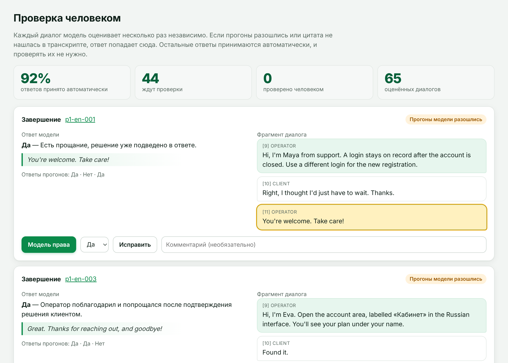
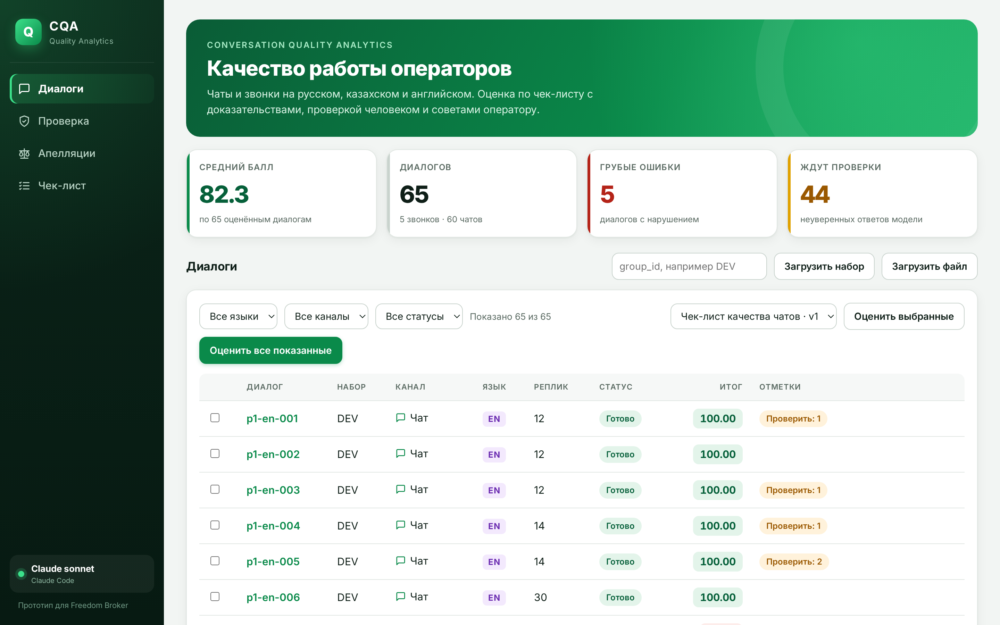

Оцениваем каждый диалог на русском, казахском и английском по чек-листу компании — с доказательствами, проверкой человеком и советом оператору.
Контролёр читает и слушает диалоги вручную, поэтому проверяется лишь малая часть, а оценки разных людей расходятся.
Каждый диалог нужно прочитать или прослушать целиком и сверить с чек-листом из восьми критериев.
«Эмпатия» и «полнота ответа» у разных контролёров означают разное. Оператору трудно оспорить оценку.
Чаты и записи звонков на русском, казахском и английском, с ошибками распознавания речи.
Модель отвечает на вопросы чек-листа, а всё, что можно проверить кодом, проверяет код.
Диалоги из API организаторов или файлом. Чаты и звонки с записью.
Claude оценивает каждый критерий трижды: ответ, объяснение, реплика-доказательство.
Код сверяет каждую цитату с транскриптом — выдумать доказательство нельзя.
Веса, N/A с перераспределением, округление — строго по чек-листу.
Неуверенные ответы уходят в очередь проверки, остальные принимаются сразу.
Если три прогона модели разошлись или цитата не нашлась в тексте, ответ сам уходит человеку. Остальное проверять не нужно.
ответов на DEV принято автоматически
Человеку — только 44 из 520 ответов. Чаще всего это «Завершение» в английских чатах: там правило чек-листа неоднозначно.

По каждому критерию, где оператор потерял баллы: ошибка, готовая реплика на языке диалога и правило на будущее. Реальный пример из DEV, диалог p1-ru-022:
Средний итог по группам, из 100
Где операторы чаще всего теряют баллы
«Завершение»: 23 из 58 диалогов без итога или прощания
«Ведение диалога»: 24 из 65 с заметными сбоями
«Консультация»: 20 из 64 — ответ неполный
Веса, N/A и округление детерминированы. Одинаковые ответы — всегда одинаковый балл.
Клик по критерию прокручивает транскрипт к реплике, у звонка запись играет с этого места.
Для Да/Нет — большинство, для шкал — медиана. Случайный разброс модели сглаживается.
Оператор оспаривает оценку, проверяющий решает. Инструкции внутри текста диалога модель игнорирует.
